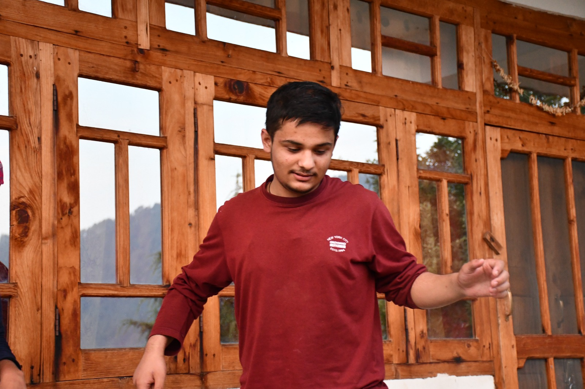

Algorithmic
Persuasion
How Short-Form Feeds Rewire Human Communication & Attention — and how ethical communicators can take those rewired circuits back.

LMThe Linear Storytelling Collapse
For ten thousand years, human ideas travelled slowly — setups, digressions, delayed payoffs. Feed-conditioned cognition now rejects that structure before it even loads.
The Dopamine & Prediction-Error Loop
Dopamine does not encode pleasure — it encodes prediction error. A feed that never fully surprises, never fully bores, keeps the loop firing indefinitely.
The 3-Second Visual & Semantic Hook
Top-performing communicators open in medias res — conflict or contrast inside the first frame. Toggle the comparator to feel the difference.
"So, today I'm going to be talking a little bit about our quarterly metrics, and if everyone could please just give me two minutes of your time while I set up the context…"
Progressive Disclosure & Pacing Architecture
The Zeigarnik Effect: unfinished tasks occupy working memory until closed. Structure information as serial open loops — and always show where the audience is.
This deck is its own proof. Look at the progress dock at the bottom-center of this screen — segmented, numeric, live. It closes a tiny loop every single transition, lowering audience anxiety about duration and unknown structure.
Micro-Interactions & Multi-Sensory Anchoring
The orienting response fires at every novel state change. Re-trigger it every 15–20 seconds — below the threshold that overloads working memory.
Kinetic Typography
Movement carries emphasis without sound. Words that shift weight tell the eye what the voice would stress.
Spatial Depth
Layered elevation cues (soft extrusion, frosted planes) give abstract ideas a physical address in space.
Visual State Change
A pressed button, a morphing counter, a toggled comparison — micro-feedback proves the medium is alive.
Live demo: this phrase re-states itself on the orienting cadence. Notice you cannot ignore a changing field — that is the reflex, not curiosity.
Signal Compression vs. Cognitive Shallowing
Every tool that raises engagement velocity lowers nuance bandwidth. The matrix of the trade-off — named honestly, so we can choose it deliberately.
| Dimension | High-Velocity Engagement | Deep Critical Nuance | The Trade-Off |
|---|---|---|---|
| Take Structure | Binary, decisive, shareable | Flattened — qualifiers read as weakness | Disagreement collapses into tribes |
| Time Horizon | Optimised for the first 3 seconds | Ideas needing 30 minutes starve | Complex truths lose the attention market |
| Evidence | One vivid example beats a dataset | Base rates invisible; anecdotes omnipresent | Statistical thinking outcompetes poorly |
| Emotion | High-arousal content propagates | Calm, ambivalent states do not spread | Outrage becomes the native dialect |
| Memory | Hooks + loops encode strongly | Shallow processing, rapid decay of substance | People remember frames, not facts |
Ethical line: use velocity to deliver people to depth, not to replace it.
Unethical line: engineered frictionlessness toward behaviour you would not defend face-to-face.
Test: if the hook promised more depth than the payload delivers, you have lied at the API boundary of attention.
Hijacking the Feed Rules for Deep Ideas
Three architectural rules for speakers, engineers, and designers who refuse to let the medium flatten the message.
Front-load the Stakes
Answer "why should I care?" in the first sentence, frame, or screen. Context is a seasoning added after the hook lands — never a toll gate before it.
Visual State Shift Every 60 Seconds
New diagram, new metric, new plane of motion. One deliberate orienting trigger per minute keeps the reflex awake without fragmenting comprehension.
One Core Metric Per Frame
Working memory holds roughly four chunks — spend them on one number, one claim, one image. Density is the enemy of retention; whitespace is persuasion.
The 10-Minute Blueprint — Before vs. After
The same talk, pitch, or lecture — rebuilt with ethical algorithmic pacing. Nothing is dumbed down; everything is sequenced for how attention actually works.
| Phase | Before · Default Protocol | After · Algorithmic Pacing | |
|---|---|---|---|
| Opening 0:00 | "Can everyone hear me? Let me set up some context…" | Cold-open with the stakes: one stat, one contradiction, one promise of payoff. | |
| Setup 0:30 | Bio, agenda, methodology — 4 minutes of toll-booth. | Progress bar visible; credibility delivered inside the story, not before it. | |
| Body 2:00 | Seven equal-weight sections, monotone cadence. | Three pillars, serial open loops, each closed with a visual state shift under 60 seconds. | |
| Data 5:00 | Full spreadsheet screenshot, 14 columns. | One core metric per frame; the rest lives in the handout for the motivated. | |
| Dip 7:00 | Energy sags; audience quietly exits mentally. | Pattern interrupt: a question, a toggle, a live counter — re-arm the orienting response. | |
| Closing 9:00 | "…so yeah, that's basically it. Any questions?" | Close every loop, restate the single sentence you want remembered, hand out the next open loop. |
Attention is not the resource being competed for.
Behaviour is. The feed taught your audience how to consume you —
the ethical move is to teach them something worth keeping.
Thank you. The loop opened on Slide 1 closes now — the next open loop is yours.